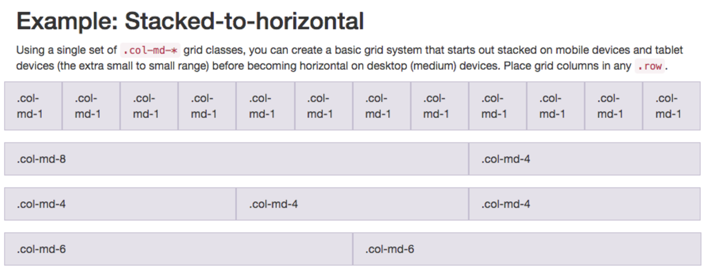
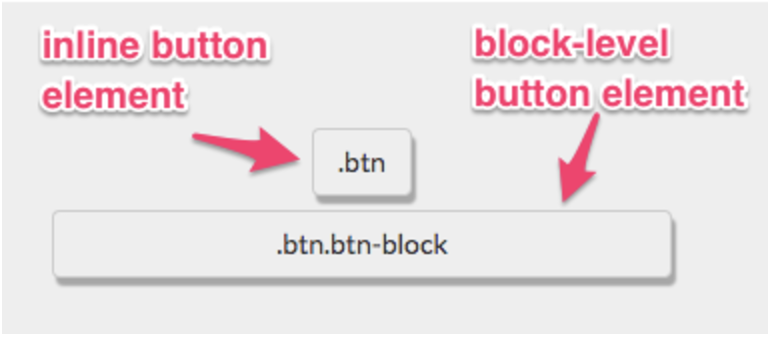

Create a bootstrap button:
    Bootstrap's <button> elements > HTML elements. The bootstrap class for button is <btn>. Ex:
        <button class="btn">Like</button>

Create a block element bootstrap button:
    Normally, <button> elements with a class of <btn> are only as wide as the text that they are contain. By making them block elements with additional class of <btn-block>, button will stretch to fill page's entire horizontal space and any elements following it will flow onto a "new line" below the block. Ex: 
        <button class="btn btn-block">Submit</button>
    Note: these buttons still need <btn> class

Taste the bootstrap button color rainbow:
    The <btn-primary> class is the main color you'll use in your app. It's useful for highlighting actions you want your user to take. Ex:
        <button class="btn btn-block btn-primary">Submit</button>

Call out optional actions with button info:
    Bootstrap comes with several pre-defined colors for buttons. The <btn-info> class is used to call attention to optional actions that the user can take. Ex:
        <button class="btn btn-block btn-info">Info</button>

Warn your users of a dangerous action:
    The <btn-danger> class is the button color you'll notify uers that the button performs a destructive action, such as deleting a cat photo. Ex:
        <button class="btn btn-block btn-danger">Delete</button>

Use the bootstrap grid to put elements side by side:
    Bootstrap uses a responsive grid system, which makes it easy to put elements into rows and specify each element's relative width. Most of Bootstrap's classes can be applied to a <div> element. Ex:
        
    <col-md-*> class is being used for grid here. <md> = medium and <*> = how many columns wide the element should be. <xs> = extra small
    In this case, column width of an element on a medium-sized screen, such as laptop, is being specified. Nesting ex:
        <div class="row">
            <div class="col-xs-4">
                <button class="btn btn-block btn-primary">Like</button>
            </div>
        </div>

Use spans for inline elements:
    Can use spans to create inline elements. Remember using <btn-block> class to make the button fill the entire row? <inline> vs <block-level>:
        
    By using <span> element, you can put several elements together, and even style different parts of the same element differently. Ex:
        <p>Top 3 things cats <span class="text-danger">hate:</span></p>

Responsively style radio buttons and checkboxes:
    It is also possible to use Bootstrap's <col-xs-*> classes on <form> elements too! This way, the radio buttons and checkboxes will be evenly spread out across the page, regardless of how wide the screen resolution is. 

Style text inputs as form controls:
    You can add the <fa-paper-plane> Font Awesome icon by adding <i class="fa fa-paper-plane"></i> within your submit <button> element. 

Line up form elements responsively with bootstrap:
    Now let's get your form <input> and your submission <button> on the same line. We'll do this the same way we have previously: by using a <div> element with the class <row>, and other <div> elements within it using the <col-xs-*> class.